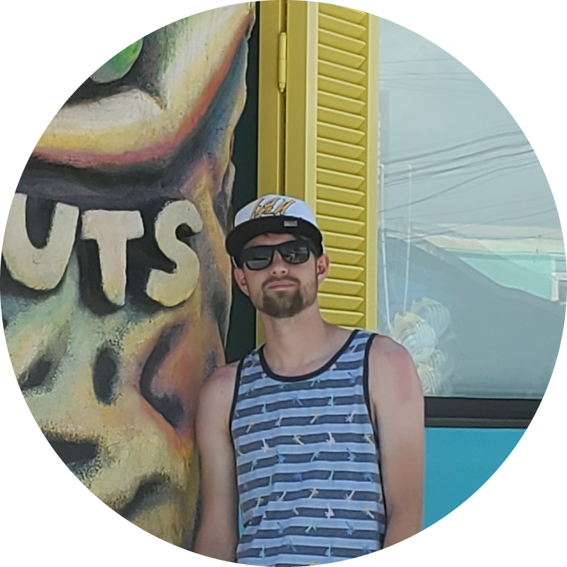
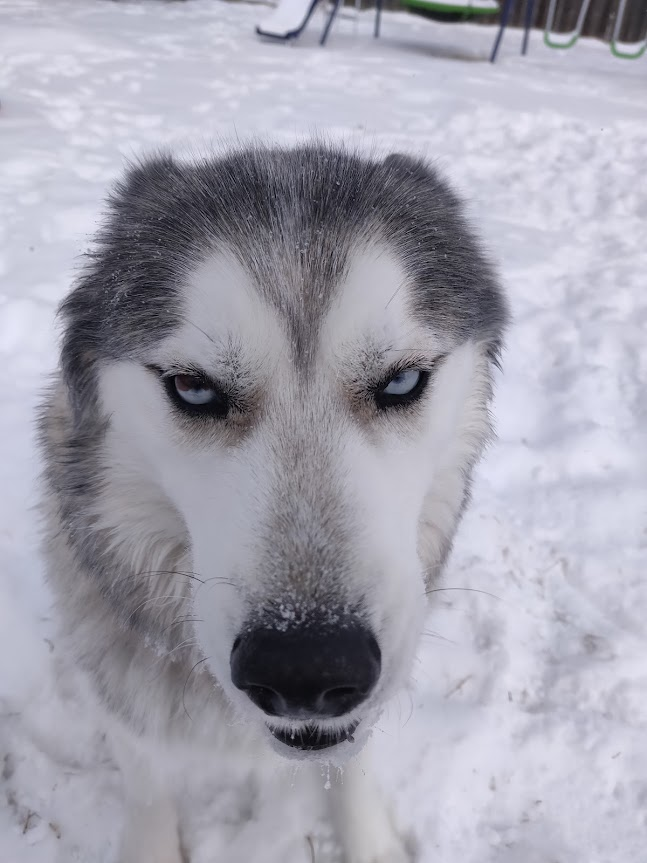
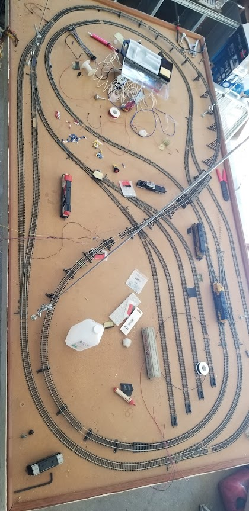

Chris Simoni
Aspiring Software Engineer
I'm an aspiring software engineer currently enrolled in classes at Cowley County Community College.

I have many hobbies including fish keeping, model trains and programming. I enjoy making programs and messing with microcontrollers the most. I also like dogs.

I am a part of the Jellyfin development team for the Android TV Client. I developed the BrewBot application as a way to learn C/C++ and the Win32 API. I am working with a team on reversing the Sony SCE-RT library and making a custom server for PSP online games that use it. When I can, I also am developing a music syncing application that will sync songs between a (self-hosted) server and any client device.
Gits
Top Projects
- Jellyfin, The Free Software Media System (specifically the Android TV Client)
- BrewBot
- TuneSync Server and TuneSync Client
Contact Me
- Email: chris@simoni.dev